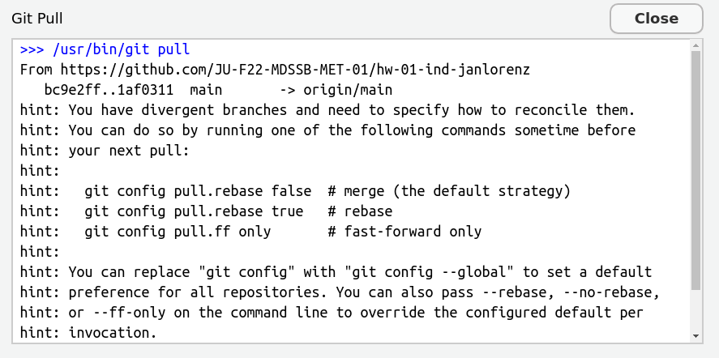

Git can merge changes in the same file when there are no conflicts. Let’s try.
The second team member:
Add your name in the author section of the YAML, save the file, add the file in the Git pane and make a commit.
Save, add the file in the Git pane, commit with message “Next author name”, push.
The third (or first) team member:
Change the title in the YAML to something meaningful (and also add your name if third team member), save the file, add the file in the Git pane and make a commit.
Try to push. You should receive an error. Read it carefully, often it tells you what to do. Here: Do git pull first. You cannot push because remotely there is a newer commit (the one your colleague just made).
Pull. This should result in message about a successfull auto-merge. Check that both are there: Your line and the line of your colleague. If you receive several hints instead, first read the next slide!
??? git configuration for divergent branches
If you pull for the first time in a local git repository, git may complain like this:

Read that carefully. It advises to configure with git config pull.rebase false as the default version.
How to do the configuration?
Copy the line git config pull.rebase false and close the window.
Go to the Terminal pane (not the console, the one besides that). This is a terminal not for R but to speak with the computer in general. Paste the command and press enter. Now you are done and your next git pull should work.
Step 5: Push and pull the other way round
The third/first member:
The successful merge creates a new commit, which you can directly push.
Push.
The second team member (and all others):
Pull the changes of your colleague.
Practice a bit more pulling and pushing commits and check the merging.
Step 6: Create a merge conflict
First and second team members:
Write a different sentence after “Executive Summary.” in YAML abstract:.
Each git add and git commit on local machines.
First member: git push
Second member:
git pull. That should result in a conflict. If you receive several hints instead, first read the slide two slides before!
The conflict should show directly in the file with markings like this
>>>>>>>>
one option of text, ======== a separator,
the other option, and <<<<<<<.
Step 7: Solve the conflict
The second member
You have to solve this conflict now!
Solving is by editing the text
Decide for an option or make a new text
Thereby, remove the >>>>>,=====,<<<<<<
When you are done: git add, git commit, and git push.
Now you know how to solve merge conflicts. Practice a bit in your team.
Working in VSCode: The workflow is the same because it relies on git not on the editor of choice.
Advice: Collaborative work with git
Whenever you start a work session: First pull to see if there is anything new. That way you reduce the need for merges.
Inform your colleagues when you pushed new commits.
Coordinate the work, e.g. discuss who works on what part and maybe when. However, git allows to also work without full coordination and in parallel.
When you finish your work session, end with pushing a nice commit. That means. The file should render. You made comments when there are loose ends and todo’s.
You can also use the issues section of the GitHub repository for things to do.
When you work on different parts of the file, be aware that also a successful merge can create problems. Example: Your colleague changed the data import, while you worked on graphics. Maybe after the merge the imported data is not what you need for your chunk. Then coordinate.
Commit and push often. This avoids that potential merge conflicts become large.
Bootstrapping
Purpose: Quantify uncertainty
Uncertainty is a central concern in inferential data analysis.
We want to estimate a parameter of a population from a sample.
Central inferential assumption:
Our data is a random sample from the population we are interested in.
No selection biases.
Examples:
We want to know average height of all people but we only have a sample of people.
We want know the mean estimate of all possible participants of the ox meat weigh guessing competition from the sample ballots of participants we have.
We want to learn something about penguins from the data of the penguins in palmerpenguins::penguins
Practical example: Galton’s Data
Competition: Guess the weight of the meat of an Ox? (Galton, 1907)
What is the mean of all possible participants \(\mu\)?
library(tidyverse)
── Attaching core tidyverse packages ──────────────────────── tidyverse 2.0.0 ──
✔ dplyr 1.1.4 ✔ readr 2.1.5
✔ forcats 1.0.0 ✔ stringr 1.5.1
✔ ggplot2 3.5.1 ✔ tibble 3.2.1
✔ lubridate 1.9.3 ✔ tidyr 1.3.1
✔ purrr 1.0.2
── Conflicts ────────────────────────────────────────── tidyverse_conflicts() ──
✖ dplyr::filter() masks stats::filter()
✖ dplyr::lag() masks stats::lag()
ℹ Use the conflicted package (<http://conflicted.r-lib.org/>) to force all conflicts to become errors
Rows: 787 Columns: 2
── Column specification ────────────────────────────────────────────────────────
Delimiter: ","
dbl (2): Estimate, id
ℹ Use `spec()` to retrieve the full column specification for this data.
ℹ Specify the column types or set `show_col_types = FALSE` to quiet this message.
Compute the standard deviation of the bootstrap distribution.
sd(boots_galton_mean$mean)
[1] 2.732243
The standard deviation of the bootstrap distribution is called the standard error of the statistic.
Do not confuse standard error (of a statistic) and standard deviation (of a variable).
The standard error of the mean can also be estimated directly from the original sample \(x\) as \(\frac{\text{sd}(x)}{\sqrt{n}}\) where \(n\) is the sample size.
sd(galton$Estimate) /sqrt(nrow(galton))
[1] 2.623085
Insight: The standard error decreases with sample size! However, it decreases only with the square root of the sample size.
Question: You want to shrink the standard error by half. How much larger does the sample size need to be? 4 times
Confidence interval
Another way to quantify uncertainty is to compute a confidence interval (CI) for a certain confidence level:
The true value of the statistic is expected to lie with the CI with certain probability (the confidence level).
Compute the 95% confidence interval of the bootstrap distribution with quantile-functions:
95% of the estimates in this sample lie between 1191 and 1202.
We are 95% confident that the mean estimate of all potential participants is between 1191 and 1202.
We are 95% confident that the mean estimate of this sample is between 1191 and 1202.
Correct: 2.
1. The confidence is about a parameter (here the population mean) not about sample values!
3. We know the mean of the sample precisely!
The confidence interval assesses where 95% of the values are when do new samples.
CI: Precision vs. Confidence
Can’t we increase the confidence level to 99% to get a more precise estimate with a more narrow confidence interval?
Let us now bootstrap whole models instead of just mean values!
# A function to fit a model to a bootstrap sample and tidy the coefficientsfit_split <-function(split) peng_workflow |>fit(data =analysis(split)) |>tidy() # Make 1000 bootstrap samples and fit a model to eachboots_peng <-bootstraps(penguins, times =1000) |>mutate(coefs =map(splits, fit_split))
Bootstrap data frame
Now we have a column coefs with a list of data frames, each containing the fitted coefficients.
`stat_bin()` using `bins = 30`. Pick better value with `binwidth`.
`stat_bin()` using `bins = 30`. Pick better value with `binwidth`.
`stat_bin()` using `bins = 30`. Pick better value with `binwidth`.
We could derive bootstrapped p-values from these distributions.
computed p-values from each fit
Each bootstrap fit also delivers computed p-values for each coefficient.1
`stat_bin()` using `bins = 30`. Pick better value with `binwidth`.
`stat_bin()` using `bins = 30`. Pick better value with `binwidth`.
`stat_bin()` using `bins = 30`. Pick better value with `binwidth`.
computed p-values in resamples vary widely (see islandDream) when bootstrapped p-values show insignificance.
Cross validation: Another resampling method
How to evaluate performance on training data only?
Model performance changes with the random selection of the training data. How can we then reliably compare models?
Anyway, the training data is not a good source for model performance. It is not an independent piece of information. Predicting the training data only reveals what the model already “knows”.
Also, we should save the testing data only for the final validation, so we should not use it systematically to compare models.
A solution: Cross validation
Cross validation
More specifically, \(v\)-fold cross validation:
Shuffle your data and make a partition with \(v\) parts
Recall from set theory: A partition is a division of a set into mutually disjoint parts which union cover the whole set. Here applied to observations (rows) in a data frame.
Use 1 part for validation, and the remaining \(v-1\) parts for training
Repeat \(v\) times
Cross validation
Wisdom of the crowd, Bias and Diversity
Galton’s data
What is the weight of the meat of this ox?
galton <-read_csv("data/galton.csv")
Rows: 787 Columns: 2
── Column specification ────────────────────────────────────────────────────────
Delimiter: ","
dbl (2): Estimate, id
ℹ Use `spec()` to retrieve the full column specification for this data.
ℹ Specify the column types or set `show_col_types = FALSE` to quiet this message.
galton |>ggplot(aes(Estimate)) +geom_histogram(binwidth =5) +geom_vline(xintercept =1198, color ="green") +geom_vline(xintercept =mean(galton$Estimate), color ="red")
787 estimates, true value 1198, mean 1196.7
RMSE Galton’s data
Describe the estimation game as a predictive model:
All estimates are made to predict the same value: the truth.
In contrast to the regression model, the estimate come from people and not from a regression formula.
The truth is the same for all.
In contrast to the regression model, the truth is one value and not a value for each prediction
Variance <-var(galton$Estimate)*(nrow(galton)-1)/nrow(galton)# Note, we had to correct for the divisor (n-1) in the classical statistical definition# to get the sample variance instead of the estimate for the population varianceVariance
MSE is a measure for the average individuals error
Bias-squared is a measure for the collective error
Variance is a measure for the diversity of estimates around the mean estimate
The mathematical relation \[\text{MSE} = \text{Bias-squared} + \text{Variance}\] can be formulated as
Collective error = Individual error - Diversity
Interpretation: The higher the diversity the lower the collective error!
Why is this message a bit suggestive?
The mathematical relation \[\text{MSE} = \text{Bias-squared} + \text{Variance}\] can be formulated as
Collective error = Individual error - Diversity
Interpretation: The higher the diversity the lower the collective error!
\(\text{MSE}\) and \(\text{Variance}\) are not independent!
Activities to increase diversity (Variance) typically also increase the average individual error (MSE).
For example, if we just add more random estimates with same mean but wild variance to our sample we increase both and do not gain any decrease of the collective error.
Accuracy for numerical estimate
For binary classifiers accuracy has a simple definition: Fraction of correct classifications.
It can be further informed by other more specific measures taken from the confusion matrix (sensitivity, specificity)
How about numerical estimators?
For example outcomes of estimation games, or linear regression models?
Accuracy is for example measured by (R)MSE
\(\text{MSE} = \text{Bias-squared} + \text{Variance}\) shows us that we can make a bias-variance decomposition
That means some part of the error is a systematic (the bias) and another part due to random variation (the variance).
The bias-variance tradeoff is also an important concept in statistical learning!
2-d Accuracy: Trueness and Precision
According to ISO 5725-1 Standard: Accuracy (trueness and precision) of measurement methods and results - Part 1: General principles and definitions. there are two dimension of accuracy of numerical measurement.
What is a wise crowd?
Assume the dots are estimates. Which is a wise crowd?
Of course, high trueness and high precision! But, …
Focusing on the crowd being wise instead of its individuals: High trueness, low precision.